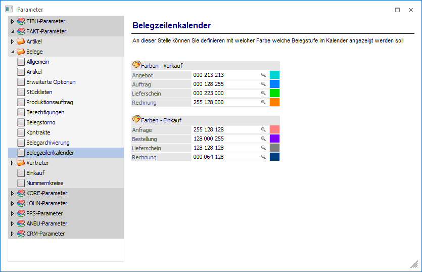
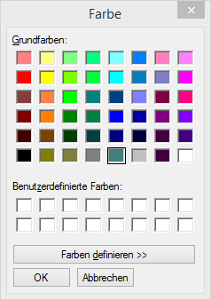
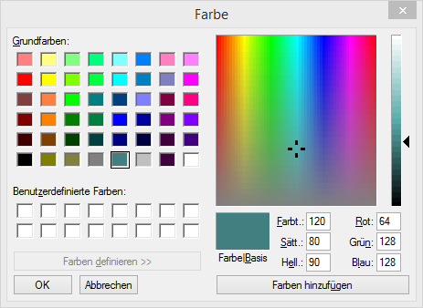

In diesem Bereich kann für jede Belegstufe - sowohl für Ein-, als auch für Verkauf - eine Farbe hinterlegt werden, welche in weiterer Folge im WinLine LIST - Beleg- bzw. Belegzeilenkalender Anwendung findet.

Pro Belegstufe kann hier ein RGB-Farbcode eingegeben werden. Alternativ kann über die F9-Taste bzw. den Matchcode das Fenster "Farbe" geöffnet werden, wo die Farbe ausgewählt werden kann.

Wird mit den hier angezeigten Farben nicht das Auslagen gefunden, kann über den Button "Farben definieren" die Anzeige erweitert werden.

Hier besteht die Mögichkeit, individuelle Farben zusammenzustellen. Mit OK wird die ausgewählte Farbe in die entsprechende Belegstufe übernommen.
Werden hier keine Farben hinterlegt, werden vom Programm automatisch Farben zur Darstellung im Kalender verwendet.